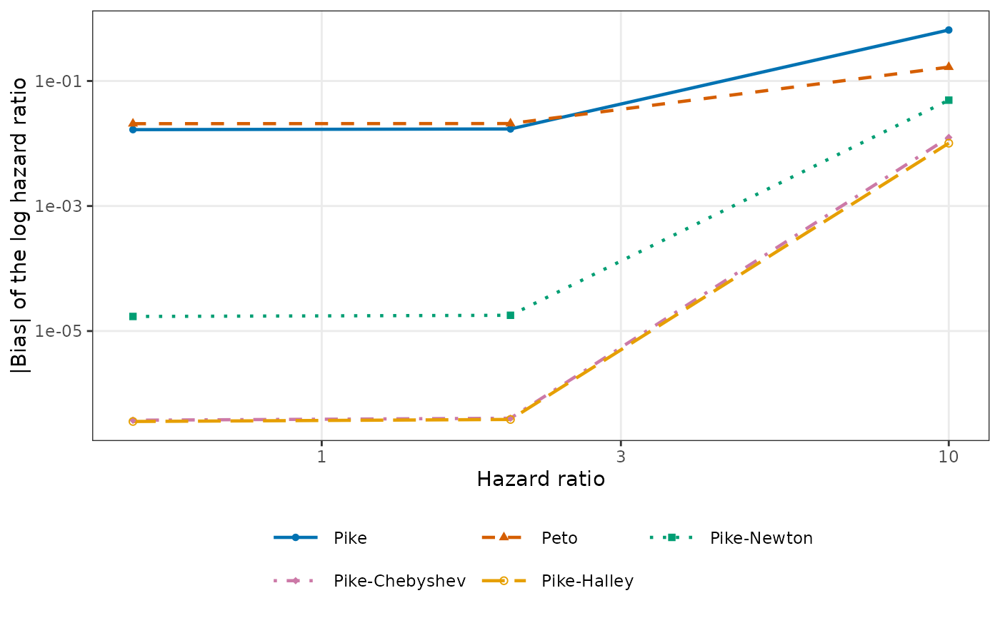

Computes the limits in probability of the log hazard ratio estimators of
EstHR under the design of GenSimData, as the
sample size grows with the ratios n_T : n_C : E held fixed. The
limit of the Mantel-Haenszel and Cox estimators is the true log hazard
ratio, whereas the Pike and Peto estimators, and the one-step corrections
from the Pike anchor, converge to other values. The difference from the
true log hazard ratio is the large-sample bias of each estimator.
Arguments
- HR
Positive numeric vector of true hazard ratios.
- hazard_C
Positive numeric. Hazard rate of the control group.
- n_T, n_C
Positive numbers of subjects in the treatment and control groups. Only their ratio matters.
- a
Positive numeric. Length of the accrual period.
- E
Positive number of events at which the analysis is triggered. Only the ratio
E / (n_T + n_C)matters, and it must be below the fraction of subjects who would ever have an event.- dropout_hazard
Non-negative numeric. Hazard rate of independent dropout. Default 0.
Value
An object of class c("LimitHR", "data.frame"), a data
frame with one row per hazard ratio and method and the columns
HR, analysis_time (calendar time of the analysis in the
limit), method (as in EstHR()), limit (limit of the
estimator of the log hazard ratio), and bias
(limit - log(HR)). The methods are "MH_Halley",
"MH_Newton", "Pike_Halley", "Pike_Newton",
"MH_Chebyshev", "Pike_Chebyshev", "MH",
"Pike", "Peto", and "Cox". The attribute
design holds the arguments other than HR.
as.data.frame() gives an object of class "data.frame". See
print.LimitHR and plot.LimitHR for the
methods of print() and plot().
Details
Let pi_T = n_T / (n_T + n_C) and pi_C = 1 - pi_T,
lambda_C = hazard_C, lambda_T = HR * hazard_C, and
lambda_D = dropout_hazard. In the limit, the analysis takes place at
the calendar time tau at which the expected fraction of subjects
with an event reaches E / (n_T + n_C). Divided by the sample size,
the number at risk in group j at time t since entry tends to
y_j(t) = pi_j G(t) exp(-(lambda_j + lambda_D) t), where
G(t) = min(1, (tau - t) / a) for 0 <= t <= tau is the
fraction of subjects followed for at least t, and the sums over the
event times in EstHR() tend to integrals over (0, tau) with
respect to dN(t) = (lambda_T y_T(t) + lambda_C y_C(t)) dt. For
example, the score U(eta) divided by the sample size tends to
u(eta) = integral of (lambda_T y_T q - lambda_C y_C p) dt with
p = y_T exp(eta) / (y_C + y_T exp(eta)) and q = 1 - p, which
vanishes at eta = log(HR). The limits of the Mantel-Haenszel,
Pike, and Peto estimators are obtained in the same way, and the limits of
the one-step corrections apply the steps of EstHR() to the limits
of the score and its derivatives at the limit of the anchor. The Cox limit
is the root of u(eta), found numerically as a check.
The integrals are computed by stats::integrate() with a relative
tolerance of 1e-10, split at tau - a when tau > a.
Times are continuous, so the Efron and Breslow handling of ties give the
same limits, and strata are not considered.
Examples
lim <- LimitHR(HR = c(0.5, 2, 10), hazard_C = log(2) / 18,
n_T = 100, n_C = 100, a = 12, E = 160)
lim
#> Large-sample limits of the log hazard ratio estimators
#> Design: hazard_C = 0.0385, n_T : n_C = 100 : 100, a = 12, E = 160, dropout hazard = 0
#>
#> Analysis time:
#> HR = 0.5 HR = 2 HR = 10
#> 67.6 37 30
#>
#> Bias (limit - log HR):
#> HR = 0.5 HR = 2 HR = 10
#> MH_Halley 0 0 0
#> MH_Newton 0 0 0
#> Pike_Halley 3.58e-07 -3.85e-07 -0.0101
#> Pike_Newton 1.71e-05 -1.79e-05 -0.0494
#> MH_Chebyshev 0 0 0
#> Pike_Chebyshev 3.75e-07 -4.03e-07 -0.0125
#> MH -2.22e-16 0 0
#> Pike 0.0167 -0.0171 -0.654
#> Peto -0.0208 0.0209 0.167
#> Cox 0 -1.11e-16 -1.6e-14
plot(lim)

# Bias of the Pike anchor and of the Halley steps from each anchor
subset(as.data.frame(lim), method == "Pike" | method == "Pike_Halley" |
method == "MH_Halley")
#> HR analysis_time method limit bias
#> 1 0.5 67.62323 MH_Halley -0.6931472 0.000000e+00
#> 3 0.5 67.62323 Pike_Halley -0.6931468 3.577575e-07
#> 8 0.5 67.62323 Pike -0.6764831 1.666409e-02
#> 11 2.0 37.04969 MH_Halley 0.6931472 0.000000e+00
#> 13 2.0 37.04969 Pike_Halley 0.6931468 -3.851782e-07
#> 18 2.0 37.04969 Pike 0.6760562 -1.709101e-02
#> 21 10.0 30.03873 MH_Halley 2.3025851 0.000000e+00
#> 23 10.0 30.03873 Pike_Halley 2.2924698 -1.011533e-02
#> 28 10.0 30.03873 Pike 1.6484368 -6.541483e-01